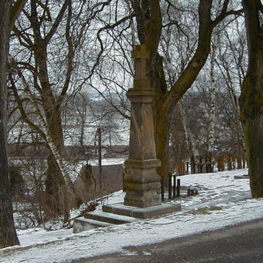

Zaodhadice pod Severou
Domů
Galerie
Oznámení
Zastupitelstvo
Kontakt
Hledat
Galerie
Most vedoucí přes řeku Severu
Obecní úřad a Hasičská zbrojnice

Stará a hezká socha
Kříž na návsi (je velmi vysoký)
Památeční památník focen v pátek
Zvonička která zvoní na oběd
Fotografie požáru z roku 1870
Stavba mostu přes Severo (1750)